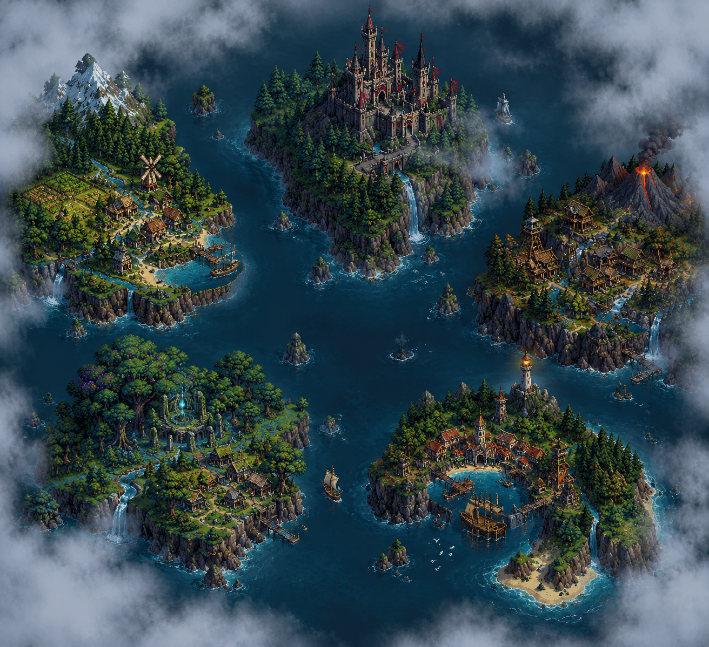

Próximas Actualizaciones
Las Islas
Las futuras actualizaciones de Beyond the Mist ampliarán el mundo de Aetheria con nuevas islas que podrán ser exploradas por los jugadores. Cada una contará con sus propios territorios, paisajes, criaturas, recursos, habitantes y desafíos.

Estas nuevas regiones permitirán continuar la exploración más allá de Aetheria y descubrir una parte del mundo que permanece oculta durante la aventura principal.
El descubrimiento de las islas
Las islas serán reveladas después de los acontecimientos principales del juego. Tras la desaparición de la niebla que rodea Aetheria, el horizonte dejará de estar oculto y los habitantes descubrirán que su reino nunca estuvo solo.
Más allá de la niebla existen cuatro grandes islas, cada una con características y ecosistemas diferentes. Su descubrimiento marcará el comienzo de una nueva etapa para el mundo de Beyond the Mist, permitiendo al jugador explorar territorios desconocidos y enfrentarse a nuevas criaturas y peligros.